Développeuse Web Junior
A propos...
Nom: NADEAU
Prénom: Ludivine
Age: 43 ans
J'ai récemment obtenu le titre professionnel de Développeuse Web Web Mobile (RNCP 31114, niveau
bac+2). Ce titre à été obtenu suite à une formation intensive de 805 heures sur 6 mois avec le
centre de formation LA MANU de Noyon(60400)
Cette formation m'a permise d'acquérir de l'autonomie car son objectif est "apprendre à apprendre".
Je ne me lasse pas d'étoffer mon panel de connaissances : je profite de mon temps libre pour apprendre de nouvelles technologies et frameworks
Après avoir travaillé de nombreuses années en tant que conseillère clientèle, j'ai choisi de me renconvertir en développeuse web. Ayant déjà travaillé en groupe, je peux travailler seule comme en groupe, m'adapter à un environnement de travail inconnu.
Je cherche à optimiser au mieux le code, en gardant la ligne directrice de la conception "KISS" ( Keep It Simple, stupid).
Formation et diplômes
-
Formation "Développeur Web Web Mobile"
Septembre 2019 - Mars 2020Formation intensive à l'école numérique LA MANU de Noyon (60400)
titre d'état obtenu en Octobre 2020. -
BTS Action Commerciale
Septembre 2001 - Juillet 2003Contrat d'apprentissage avec l'Institut Consulaire de Formation en Alternance (ICFA) de Bordeaux (33300) et France Telecom - Bordeaux (33000)
-
Bac Scientifique option Mathématiques
Juillet 1997Lycée La Sauque - 33650 La Brède
Compétences
Front-end
Création et integration de sites web responsives , accessibles et répondant aux normes W3C
HTML5CSS3
Javascript
JQuery
Bootstrap
JSON
AJAX
Back-end
Développement de sites web, création et gestion de base de données, programmation orientée objet, mise en ligne
PHPMySql
Connexion FTP
Environnement de travail :
système d'exploitation : Windows 10, Linux ubuntu
Workflow : GitHub, WAMP, Uwamp, Firefox, Chrome,
Filezilla
IDE: Visual Studio Code, Atom, NetBeans, Sublim Text
Savoir-être : travail en équipe, bon relationnel, capacité
d'écoute et d'analyse, facilité d'adadptation, organisation, rigueur
Projet en cours de finition :
Lors de ma formation, j'ai developpé des codes en groupe afin de faire des sites web, sur differentes
thématiques
Pour l'obtention du titre professionel "Developpeur Web Web Mobile, j'ai réalisé le projet
"mamienouche.com", qui est en cours de finition
Thématique de ce site: "comment confectionner les produits pour l'entretien de la maison, des produits
d'hygiène/cosmétique depuis chez soi, et astuces de grand-mère"
La confection de ce site m'a permis d'approffondir mes connaissances et aborder de nouvelles techniques,
comme Ajax
Voici quelques views pour avoir une vision globale du site. Vous pouvez également vous rendre sur ce
site qui est libre d'acces : mamienouche.com
 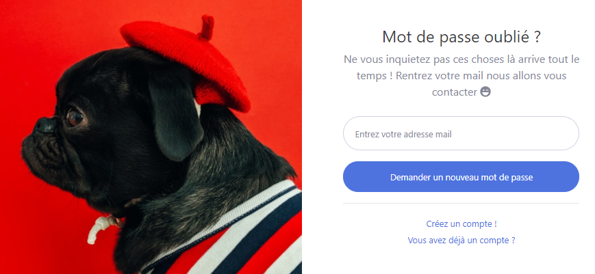
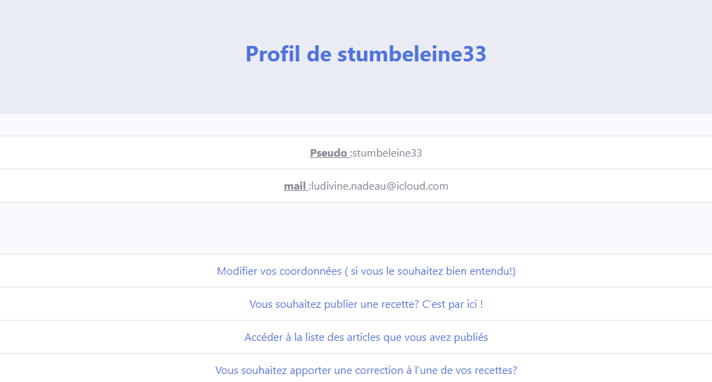
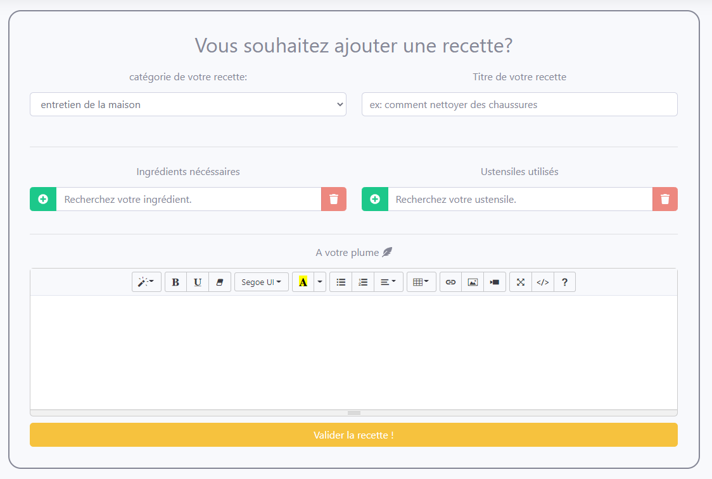
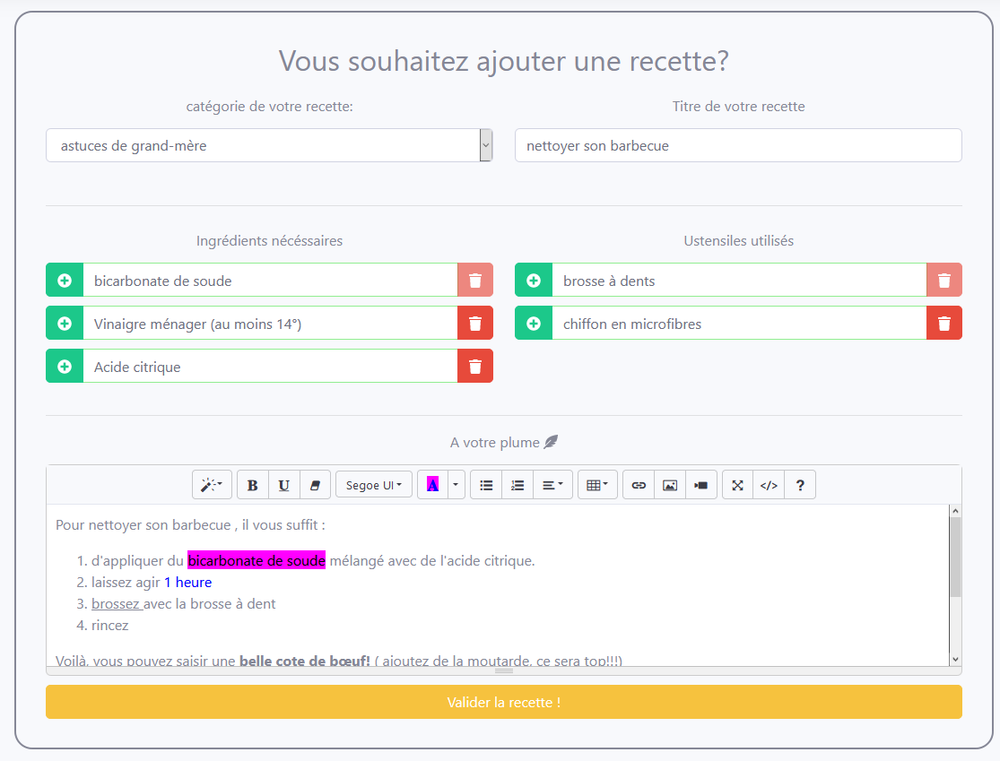
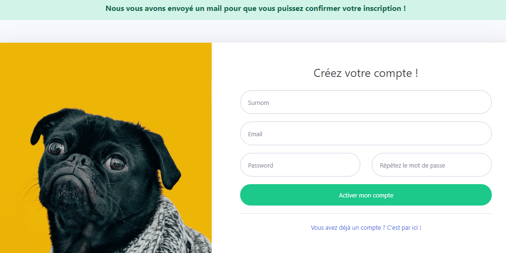
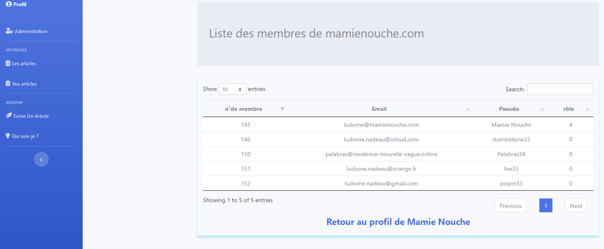
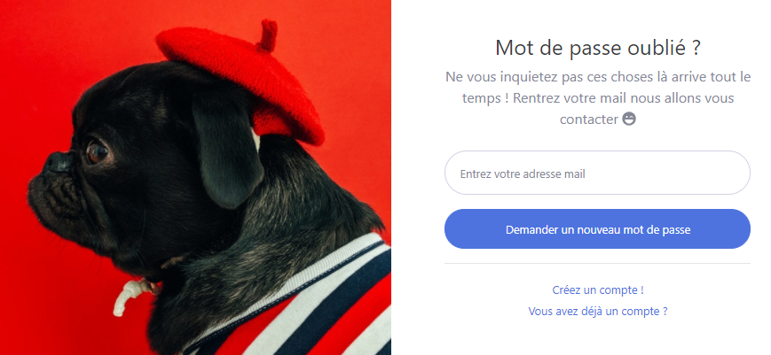
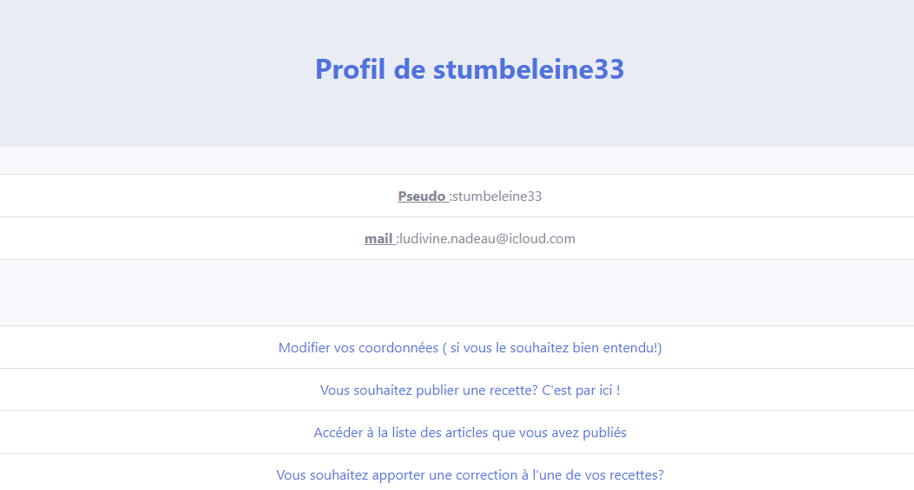
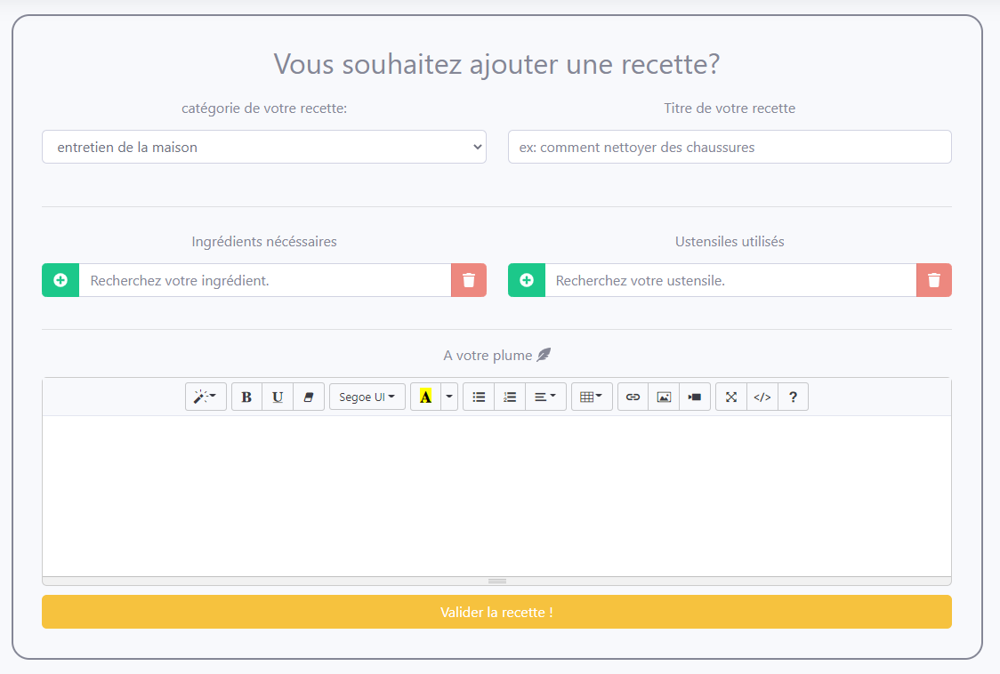
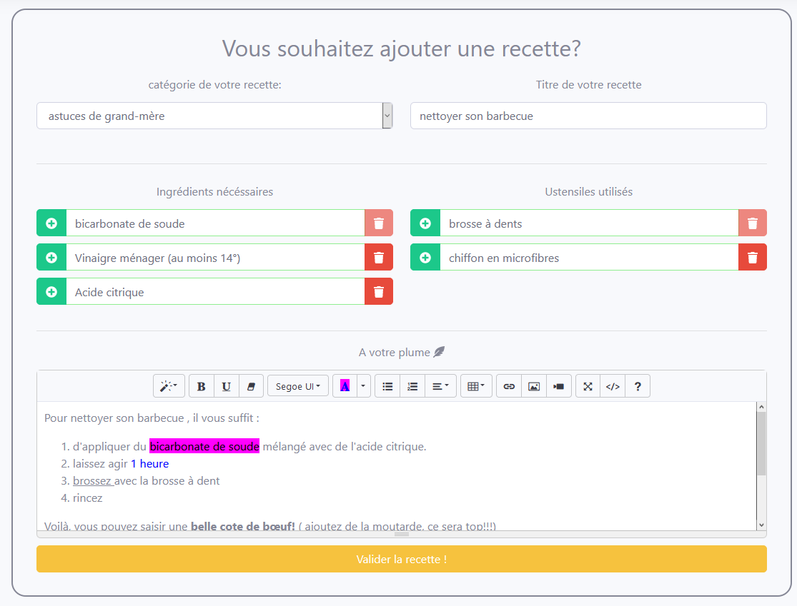
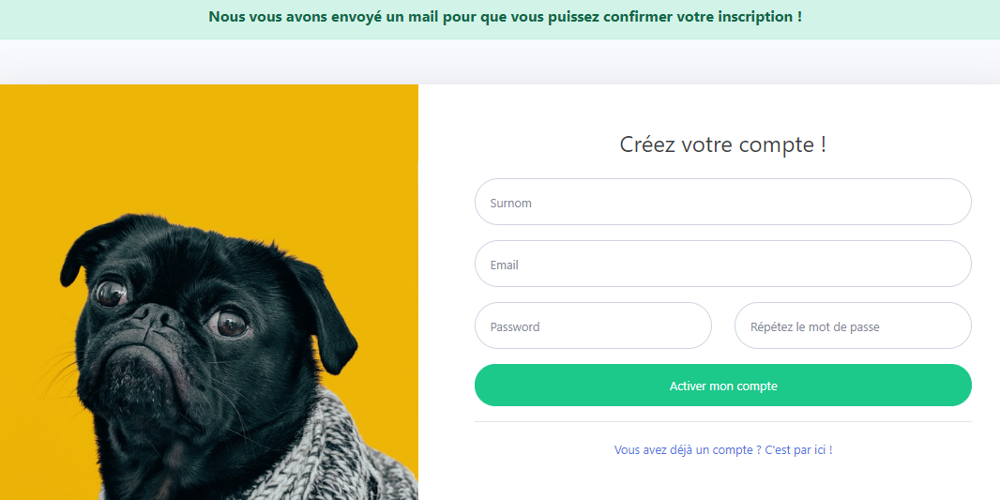
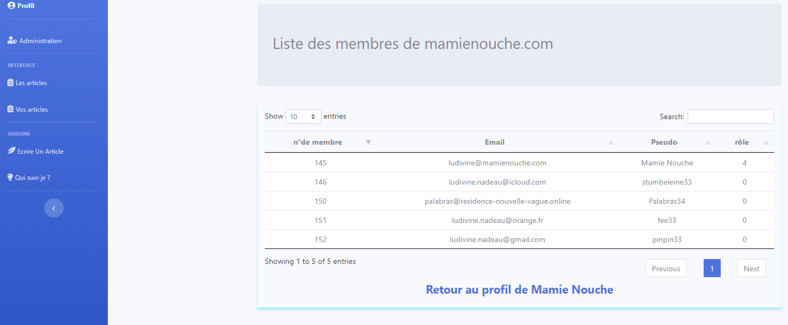
Expérience professionelle
-
Conseillère clientèle - Assistante technique
Février 2007 - Juillet 2019
Voyages Rive Gauche
93320 Les Pavillons Sous bois
- Acceuil physique et téléphonique de la clientèle
- Ecoute et analyse des attentes des clients
- Suivi du dossier des clients ( de la vente du voyage jusqu'au départ)
- Démarches administratives( demande de visas auprès des organismes concernés, respect du timing , envoi du carnet de voyage aux clients, relance de solde)
-
De Septembre 2003 à Janvier 2007:
- Chargée de recouvrement - Orange (33000 Bordeaux)
- Conseillère clientèle - Cofinoga (33000 Bordeaux)
- Gestionnaire de sinistres - Cofinoga assurances (33700 Mérignac)
- Conseillère clientèle - Banque Casino (33000 Bordeaux)
-
Conseillère Clientèle à distance (1014)
Septembre 2001 - Aout 2003
FRANCE TELECOM
33000 Bordeaux
-
Chef d'équipe - formatrice
Septembre 1998 - Septembre 2001
MC DONALD'S
33300 Bordeaux